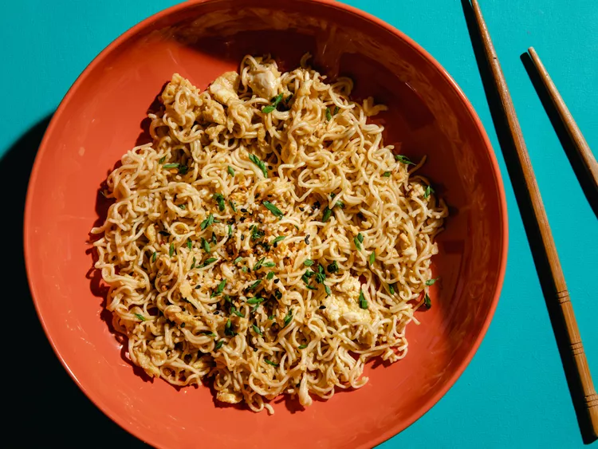

TikTok Ramen

Everything bagel seasoning is a seemingly odd addition, but
it weirdly ties the whole dish together perfectly. But, you could use
sesame seeds instead.
Ingredients
-
1 (3.5 ounce) package instant ramen noodles (exclude
seasoning packet)
- 1 tablespoon unsalted butter
- 1 clove garlic, minced
- ¼ teaspoon red chili flakes
- 1 teaspoon brown sugar
- 1 tablespoon soy sauce
- ¼ cup reserved pasta water
- 1 large egg, lightly beaten
- 2 teaspoons everything bagel seasocdning
- Green onions, thinly sliced (Optional)
Step by Step
-
Cook ramen in boiling water to al dente following package
directions. Drain and reserve ¼ cup of the water.
-
Melt butter in a skillet over medium heat. Add garlic and
cook, stirring constantly, until golden and fragrant, about 1 minute.
Stir in chili flakes, brown sugar, and soy sauce and simmer for 1
minute. Add noodles and a bit of ramen cooking water and toss to
combine.
-
Push noodles to the side and crack egg into the skillet.
Cook, stirring gently, until nearly set, then toss with the pasta and
any additional water, if desired, to thin sauce.
-
Transfer to a bowl and garnish with everything bagel
seasoning and green onions, if using.